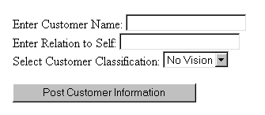

|
| ||
|
| ||
Charles Heinemann
Program Manager, XML
Microsoft Corporation
Updated April 22, 1999
The following article was originally published in the Site Builder Network Magazine "Extreme XML" column (now MSDN Online Voices Extreme XML), and assumes at least intermediate familiarity with scripting and programming concepts, and elementary familiarity with XML.
 Download the source code for this article (zipped, 1.47K)
Download the source code for this article (zipped, 1.47K)
Confounded by what the English findentertaining, I’ve resorted to a more American pastime: the TV Guide Crossword. My ability to recall who played the role of Potsie Weber has my confidence swelling. Less successful has been my quest to sell subscriptions to my new information service (as outlined in my last column). Never did I think it would be this tough to squeeze a few nickels out of my relatives.
I began by doing a little cold-calling, but everyone I got on the horn was either in the middle of dinner, confused me with a long-distance sales representative, or had, at some point, done business with my old man.
This experience soon led me to the conclusion that I needed to refocus my efforts. Instead of randomly contacting kin, I decided to concentrate on only the most savvy of family members. To do this, I had to make up a list of potential subscribers, classifying each as “No Vision,” “Will Bite,” or “Dupe,” depending on each's willingness to take that extra step toward improving his or her information situation.
I figured I could mark that list up in XML and store it on the server. I would, however, need an easy way to update the list from the client (allowing for the addition of in-laws, uncles who’ve recently crawled out of the woodwork, and for the editing of any known relatives who change status). So, I constructed a user interface out of HTML, through which I could enter the data concerning a certain relative. I could then package that data as an XML fragment and post it to the server. Once on the server, the data could be parsed and used to update the XML file on the server.
The XML file on the server is a simple set of “customer” elements:
<customers> <customer> <name>Hester Heinemann</name> <relation>Great Aunt</relation> <class>No Vision</class> </customer> <customer> <name>Cleo Heinemann</name> <relation>Nephew</relation> <class>Will Bite</class> </customer> <customer> <name>Luanne Vincent</name> <relation>Cousin</relation> <class>No Vision</class> </customer> <customer> <name>Mertle Matthews</name> <relation>Grandmother</relation> <class>No Vision</class> </customer> <customer> <name>Uncle Bud</name> <relation>Second Cousin</relation> <class>Dupe</class> </customer> </customers>
The UI is a couple of text boxes, a select box, and a button:

The user-entered data is assigned as values to an XML document that acts like a template and that data is posted to the Active Server Pages file "postCust.asp" using the XMLHTTP send method:
function submitInfo(){
var httpOb = new ActiveXObject("Microsoft.XMLHTTP");
httpOb.Open("POST","http://localhost/postCust.asp", false);
var customer = template.XMLDocument.documentElement;
customer.childNodes.item(0).text = custName.value;
customer.childNodes.item(1).text = custRelation.value;
customer.childNodes.item(2).text = custClass.value;
httpOb.send(template.XMLDocument);
}
The above function begins by creating an XMLHTTP object. I then call the Open method on the object passing it two parameters: the http method and the absolute URL for the file to which I want to save the XML.
The file postCust.asp contains the script to process and save the XML posted to the server:
<%@LANGUAGE=VBScript%>
<%
Set NEWCUSTINFO = Server.CreateObject("Microsoft.XMLDOM")
Set CUSTLIST = Server.CreateObject("Microsoft.XMLDOM")
NEWCUSTINFO.async=false
NEWCUSTINFO.load(Request)
CUSTLIST.async = false
CUSTLIST.load(Server.MapPath("customers.xml"))
Set CUSTROOT = CUSTLIST.documentElement
Set CUSTOMERS = CUSTROOT.childNodes
Set NEWCUSTROOT = NEWCUSTINFO.documentElement
QUERY = "./customer[name='" & NEWCUSTROOT.childNodes.item(0).text & "']"
Set CUSTDUP = CUSTROOT.selectSingleNode(QUERY)
If isNull(CUSTDUP) = False Then
CUSTROOT.removeChild(CUSTDUP)
End If
CUSTROOT.appendChild(NEWCUSTROOT)
CUSTLIST.save(Server.MapPath("customers.xml"))
%>
The script within postCust.asp takes the XML fragment and parses it. This converts the request object into an XML node. The file containing the customer list (customers.xml) is then loaded and parsed. A query is then processed to see if any of the customer elements within "customers.xml" have the same name as the customer in the XML fragment. If there is a match, the old node is removed and the fragment takes its place. If there is no match, the fragment is simply inserted into the tree. Following insertion of the node, the tree into which the fragment is inserted is saved as a document to the "customers.xml" file using the save method. This process overwrites the previous text within the file, effectively updating the file.
With my new Web application, I created an XML document containing information on over 40 potential subscribers. There is information on everyone from Ol’ Granny Vincent to Poor Ol’ Cousin Richie. Looking at the list, a portion of which appears earlier in this article, I think it’s safe to say that, as a group, the men in the family seem to possess greater subscriber potential. They seem to be the risk takers, the kind of folks who know a good deal when they see it. Consequently, it is they who I will target once dinnertime rolls around.
So, until then, I suppose I’ll get back to my puzzle. By the way, if anyone out there knows who played the role of Ralph Malph, please write.
Charles Heinemann is a program manager for Microsoft's Weblications team. Coming from Texas, he knows how to think big.
Dear Charles:
I would like to see some reference material for those readers that would like to get more information.
Alex
Charles answers:
Well, here you go:
msdn.microsoft.com/xml/. Under "General Information" there is a "Resources" page. At the bottom of that page are links to some good XML resource sites.
www.XMLU.com  . This site has some very good information concerning XML. It contains articles, demos, and links that will help you learn about XML and its use throughout the Web.
. This site has some very good information concerning XML. It contains articles, demos, and links that will help you learn about XML and its use throughout the Web.
Did you find this material useful? Gripes? Compliments? Suggestions for other articles? Write us!
© 1999 Microsoft Corporation. All rights reserved. Terms of use.